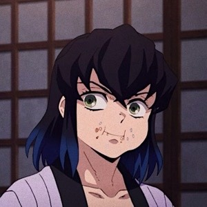

Selecione um personagem
-

- 
-


Tanjirō Kamado
Tanjiro Kamado é o protagonista da série. Ele é um jovem espadachim que se torna um caçador de demônios após sua família ser massacrada por um demônio. Ele é um personagem muito forte e corajoso, e é capaz de lutar contra demônios muito poderosos.